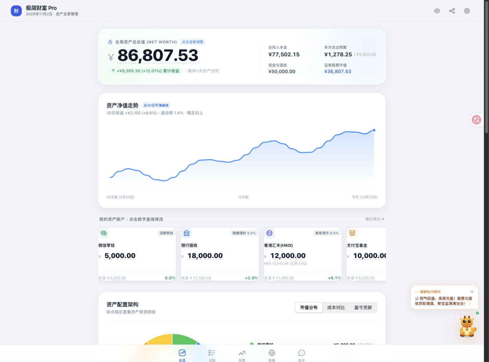

极简财富 Pro
从多账户资产到清晰的阅读层级：一项财务交互原型中的信息架构、Canvas 几何与本地状态管理。

实际原型界面，原色呈现。金额与曲线用于交互演示。
项目背景与挑战Context
这个原型针对一个具体任务：个人用户需要同时查看多个账户的市值、投入与支出，却不希望先理解一整套专业交易系统。账户数据和交易记录分散时，净值、收益与预算也容易混在一起。
目标用户设定为有多账户、多币种管理需求的个人用户。这是原型的设计假设，尚未通过正式访谈或规模化用户研究验证；因此项目先回答“信息是否能被看懂、操作是否能完成”，再考虑投资分析能力。
把不同问题放到不同的图形里
首层用总资产与累计盈亏回答“目前怎样”；第二层用账户卡片和资产配置回答“钱在哪里”；明细表保留可核对的数值。负向亏损与支出由发散条形图表达，避免把所有信息塞进同一个圆环。
设计系统与规范Design system
界面参考 Apple 原生应用常见的分组、分段控件与数字排版习惯。选择这套语言，是因为账户、预算和流水更需要稳定的阅读顺序；圆角与动效服务于分组、状态和切换反馈。
这属于设计参考，不等同于已经通过 HIG 合规审计。项目代码实际使用系统字体栈、浅色分组背景、等宽数字和三种资产视图。
保留原应用的 Indigo（#5856D6）等账户分类色，区分不同资产；等宽数字由 font-variant-numeric: tabular-nums 实现。
把数值稳定性当作排版问题
金额使用等宽数字，更新时减少位数变化带来的跳动。账户名称、币种与本金作为次级信息保留；图形与明细表使用同一组账户数据，读者可以来回核对。
设计参考：Apple Human Interface Guidelines。实现依据：原型的 .num、.glass-header、.ios-segment-btn 与 renderChartLegend。
核心交互与几何Key interactions
当前产品实现的是交互式资产圆环，而不是两条独立旋转的盈亏环。其内外边界共同形成环形扇区。每个账户的角度来自所选指标占比，点击扇区后突出该账户，并更新中心金额。
01 / 从占比推到弧度
先计算当前视图的非负数值总和 T。账户数值 vᵢ 的占比是 vᵢ / T，完整圆周对应 2π，因此每一段的角度为 2π × vᵢ / T。从顶部 −π/2 开始累加，就得到每个扇区的起止角。
02 / 用距离与角度判断点击
将点击位置从 CSS 像素换算到画布坐标，得到相对圆心的 dx、dy。距离 d = √(dx² + dy²) 判断是否落在环带内；atan2(dy, dx) 得到角度。把小于 −π/2 的角度加上 2π，即可与扇区区间逐一比较。
点选环段或账户按钮，查看中心读数变化。演示复现原型的绘制与命中原理；使用合成数据与账户分类色，不连接真实账户。
03 / 用选中态表达反馈，给动效设边界
源码画布为 560 × 560，外半径 250，内半径为外半径的 65%。选中时外边界增加 8、内边界减少 4 个画布单位。视图切换用 requestAnimationFrame 逐步展开圆周，进度每帧增加 0.08；这是一种逐帧实现，不应直接宣传为实测“稳定 60 FPS”。
“正浮盈”视图只统计 max(市值 − 成本, 0)，负收益并未消失，而是由其他图表和明细表达。进一步迭代时，应重新检查切换视图后的命中映射，并将动画改为按经过时间计算进度，以减少刷新率差异。
架构决策与权衡Architecture
财富 Pro 当前采用 HTML / JavaScript 单文件结构，账户、股票、流水、预算与目标等状态通过 JSON 保存在 localStorage。这里没有 IndexedDB，也没有跨设备自动同步。
操作改变浏览器内的状态
同一浏览器重新打开时读取
| 决策 | 当前收益 | 需要接受的限制 |
|---|---|---|
| 单文件原型 | 打开与交付路径短，便于演示交互 | 代码与状态集中，继续扩展时需要模块拆分 |
| localStorage | 小规模状态持久化直接，不需要账户服务 | 同步 API，无事务，不适合大量明细或敏感凭证 |
| 本地账户数据 | 核心编辑流程不依赖服务端数据库 | 浏览器清理会丢失状态，不自动跨设备恢复 |
离线能力要按功能区分
本地保存不代表整站完全离线。样式资源使用外部 CDN；AI 助手等网络功能另有配置依赖。案例只把已实现的浏览器保存描述为本地持久化，不把它扩展为隐私加密或完整离线承诺。
这也是它与 WHIP 的差别：后者采用 IndexedDB 和应用壳缓存来承接长期记录。两种方案服务于不同规模和阶段，不能为了统一叙述而把同一种架构写进两个项目。
交付成果与验证Impact
这项工作的成果是可运行、可检查的个人财务交互原型。当前能够展示资产数据如何被组织、如何切换观察角度，以及编辑后如何保留状态；尚无可归因的用户增长或效率提升数据。
五个功能入口与三种圆环视图
总览、记账、股票、换算、助手；圆环区分市值、成本与正浮盈，另有账户明细与盈亏条形图。
浏览器状态保存与交互逻辑
已核对状态读写、圆环绘制和点击判断的实现。趋势曲线由当前净值与确定性扰动生成，属于原型演示，不是真实历史净值。
真实任务成功率与性能基线
正式用户测试、浏览器兼容矩阵、端到端数据恢复和动画帧率基线仍需补测。未将这些项目计作已完成成果。
这项原型反映的能力
从业务对象拆分信息层级，用几何计算完成可视化与交互，并识别“图形好看”与“数据可信”之间的边界。后续优先级是接入真实时间序列、修复视图切换边界，再依据用户任务验证阅读顺序。